Card Shark
What is Card Shark?
Card Shark is a computer vision program that recognizes card and highlights the optimal moves to play. In particular, it's the world's best SET player!
What is SET?
Set is a card game in which 12 cards are laid out, and each player has to pick out sets of 3 cards that follow specific patterns. Each card is identified by combination of 4 features: shape, color, and fill, and count. A set is formed, when each feature is either the same across all three cards, or unqiue across all three cards.
How the application works?
- The application captures a frame, either from file or live video. 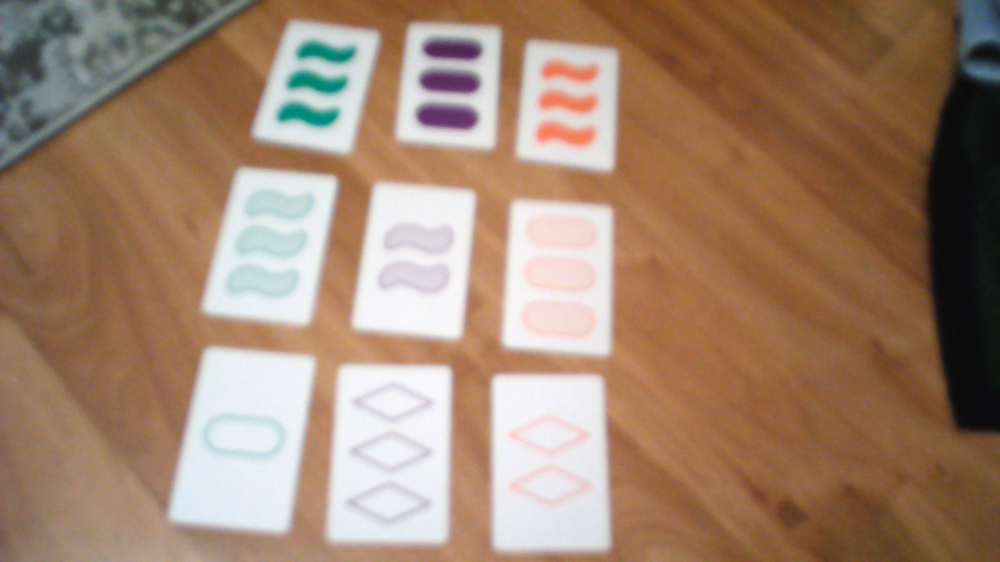
- The frame is pre-processed to filter out major variations in brightness/lighting. This flattens the image so that we can use a single threshold over the entire image in the next step, rather than a dynamic threshold, which is far less likely to form continuous borders, and create consistently closed curves for contour generation. 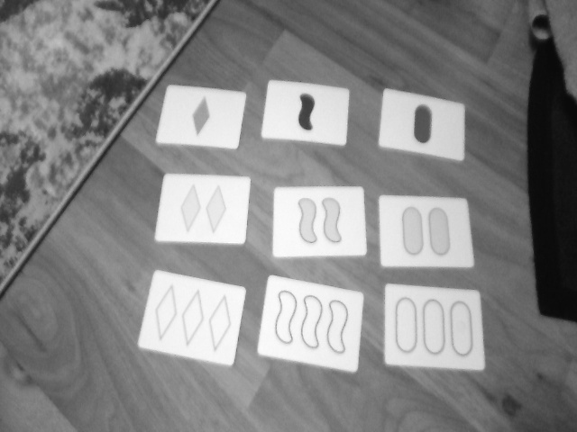 - = 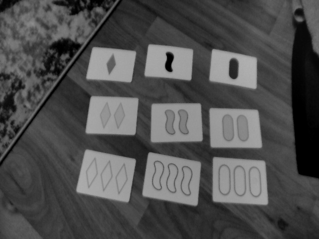
- The frame is thresholded using Otsu's method, leaving us with a binary image showing the shapes of objects in the image. We isolate the borders of these shapes, extracting them as contours. Then we filter the borders/contours, keeping only the ones that are the shape and size of cards. Basically, we check if the contour can be approximated well with exactly 4 points, and check if the area of a quadrilateral formed by those 4 points is similar to the area of the full contour. There of a few more checks related to size and aspect ratio as well. 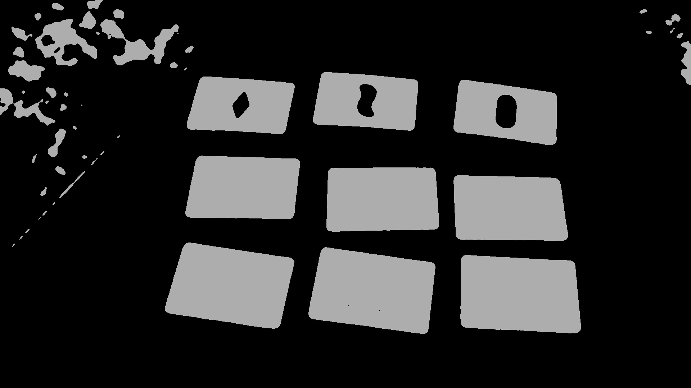
- Each Card is processed to determine it's attributes:
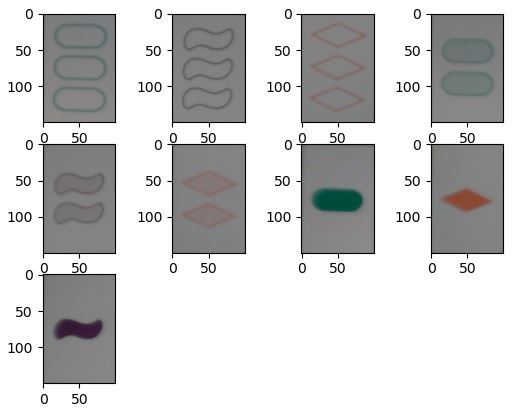
- Corners of card are extracted from contour, and used to project the card into a rectangle of standardized dimensions.
- The cards are pre-processed, converting to grayscale, blurring to reduce noise, and subtracting variation in background brightness.
- Thresholding is performed, generate a contours. 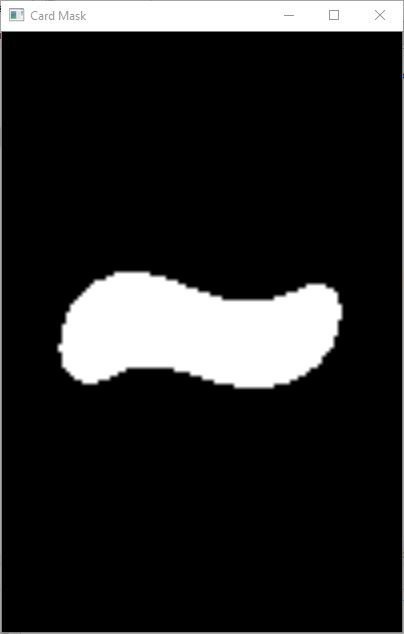
- Shape and Count:
- Method 1: The contours are used to generate masks of the contour silhouette. This silhouette is compared to previously recorded templates of each shape/count combination, using intersection over union. This method works quite well, and generalizes nicely to any deck of cards. It works 99.9% of the time, but it is a bit sensitive to translation (shifts in x and y). If the card's region of interest is not perfectly centered, misidentification can occur. 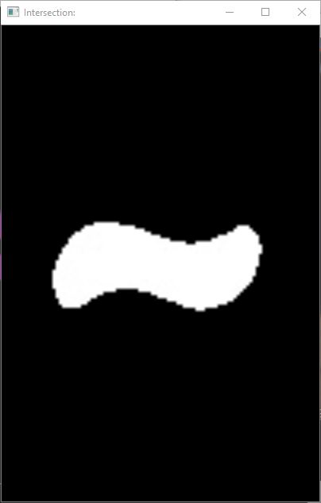 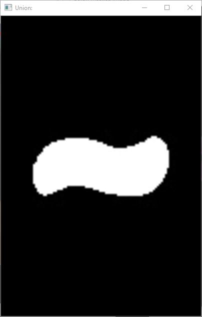 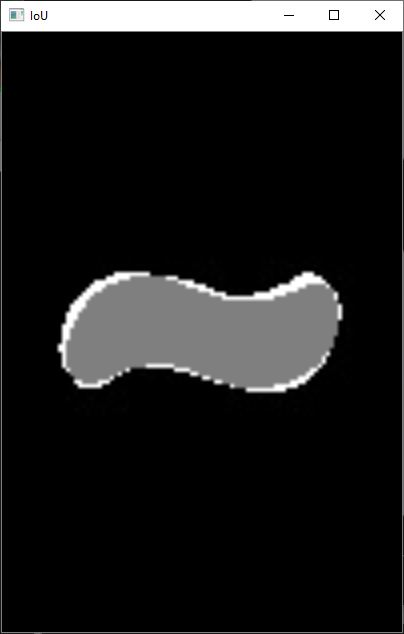
- Method 2: In order to overcome the translation invariance, I wrote detectors specific to the shapes used in SET. These detectors calculate the area of the shape, and then compare it to the areas of shapes generated with convex hulls and bounding rectangles. Different shapes very reliably generate different ratios of area, and I've utilized that as a metric to identify particular shapes. 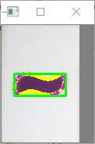
- The silhouettes from the previous step are treated as mask, and erode operations are used with some bitwise operations to generate masks that isolate the edges of shapes, the interior fill of shapes, and the background of the card.
- A copy of the image is converted into HSV space.
- Color:The HSV image is masked to isolate the edge of the shape. The hue is calculated over the mask to find the closest color match. 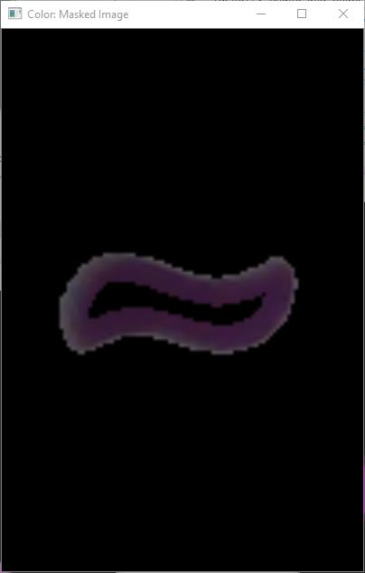 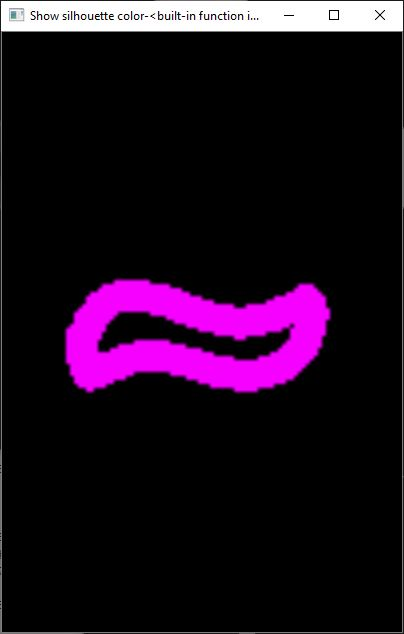
- Fill/Texture: A mask is used to calculate average saturation. However, it's fairly sensitive to lighting, so we normalize by the average saturation of the background. I had started by looking for stripes, but low quality webcams struggle to focus, so saturation proved more robust to changes in camera/lighting. 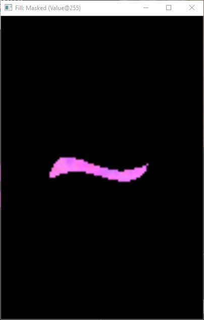 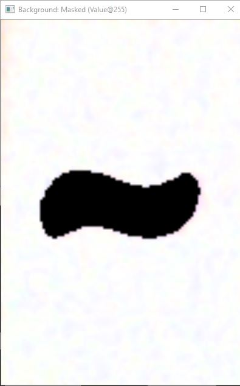
- The rules of set are applied, finding all sets.
- Graphics overlays are generated to show outline contours, cards, and sets, as well as overlaying text to show the identified attributes. A key and fps indicator are shown as well. 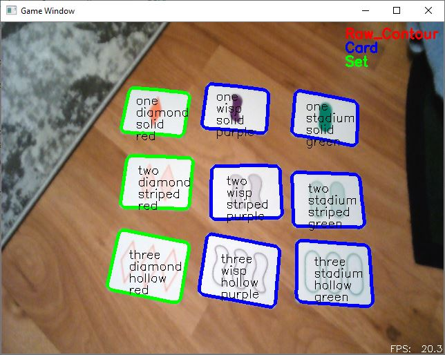
The main challenge in this project was dealing with poor image quality (cheap cameras), variations in lighting, or uneven lighting.
- The purple used on these cards is the least saturated, making it difficult to detect, particularly in bright/over-saturated conditions, where the striped purple becomes very close to a light gray.
- Realistically lighting brightness and source changes quite a bit. The colors of cards are influenced by the source, and needed to be color-balanced. Outside light is great, as long as it's not too bright. Room lights are more yellow than natural light, while iphones and computer screens are much more blue.
- Variations in intensity throughout an image make thresholding challenging, needing to be isolated and corrected.
I wrote this application to be as robust as possible, but in extreme situations, it makes sense to recalibrate (eg: if you're playing outside, or in a room with the lights off and just the glow of a tv screen). For these situations, there are a handful of routines you can run with keyboard inputs. For the most part, just press 'c' to calibrate colors, and use '[' and ']' to adjust the saturation threshold. There are a number of additional features (saving, pausing, quitting, more manual calibrations, etc.) which can be found in KeyboardInput.py, but I don't anticipate most users needed those. I included them mostly for development purposes. 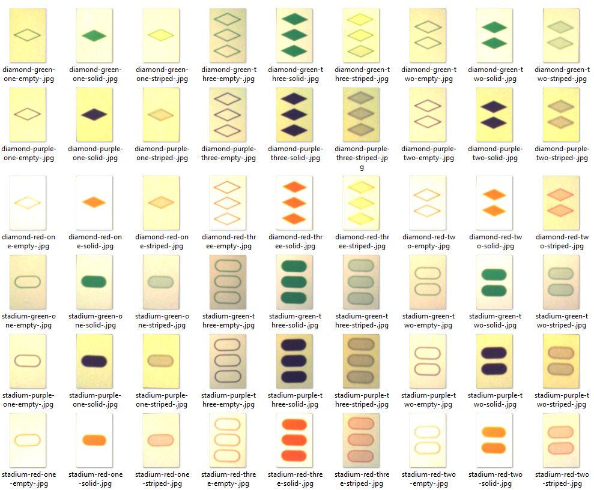
Visit the repo